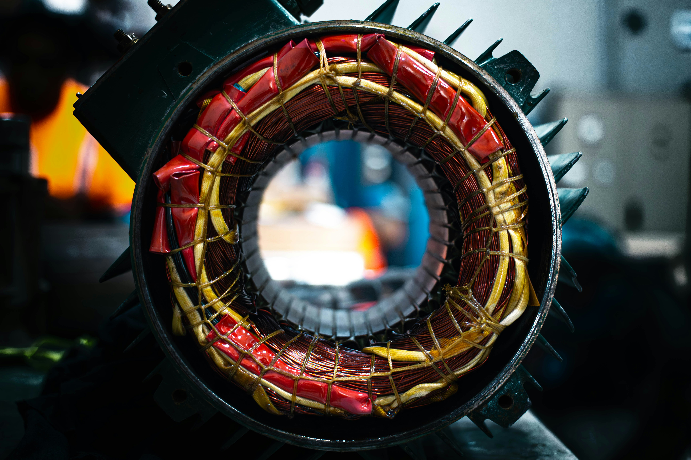

About Jimmy Neutron Electricians
Our History
Jimmy Neutron Electricians was established in 2019 by Lucky Jimmy Ndlovu. After experiencing the challenges of finding reliable electrical services, he decided to create a company that puts customers first.
We believe electricians are the invisible backbone of modern progress. Without electricity, most of daily life would come to a standstill.
We combine time-honoured craftsmanship, established by the first master wiremen, with 21st-century smart technology to deliver the best of both worlds.
Our services cater to both residential and commercial clients who need professional, trustworthy electrical solutions.
Our Mission & Vision
The main goal of the website is to provide efficient, trustworthy access to our electrical services. We strive to be the most reliable electrician service provider in South Africa.
Our Core Goals
- 24/7 availability - Allow customers to request emergency services or quotes at any time
- Increase local visibility - Improve our presence in local search results so nearby clients can find us
- Educate and support customers - Provide electrical safety tips and practical advice
- Differentiate from competitors - Use a professional, well-designed website to stand out

Did You Know? We have completed over 5,000 successful projects since 2019 with a 98% customer satisfaction rate!